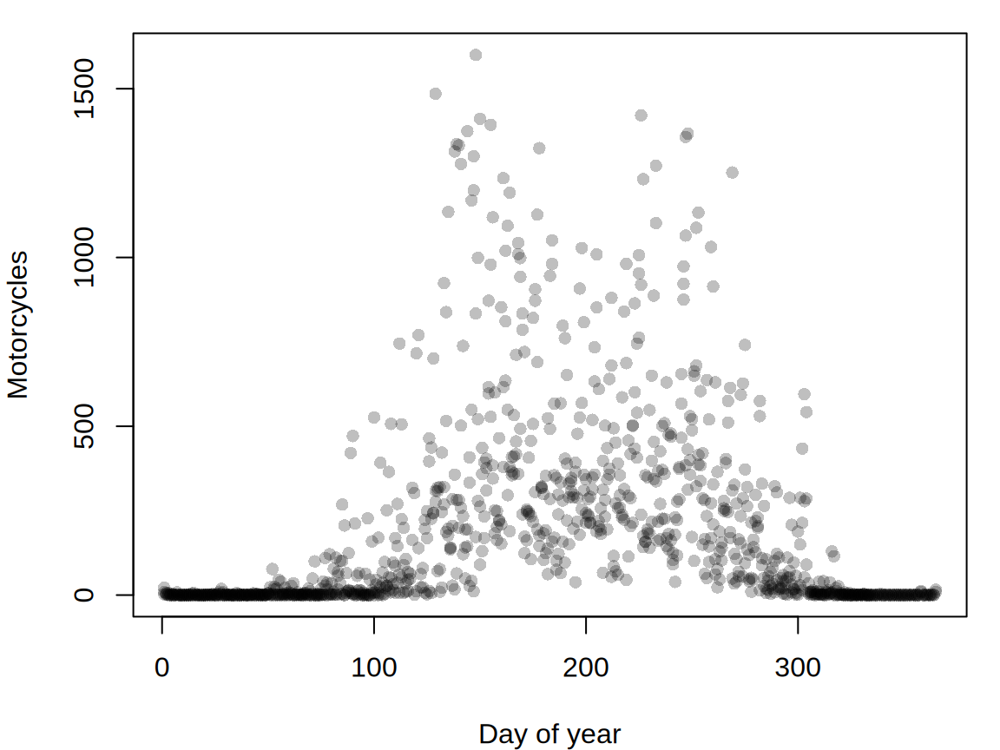
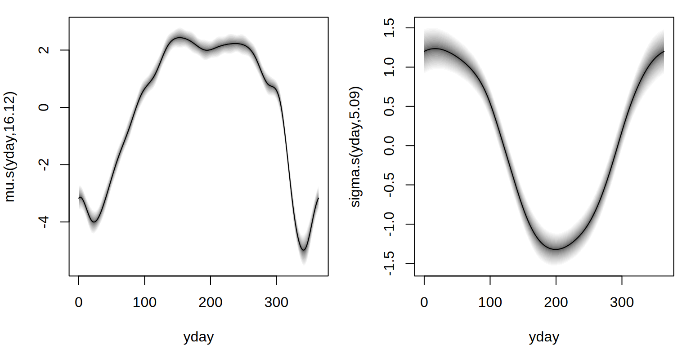
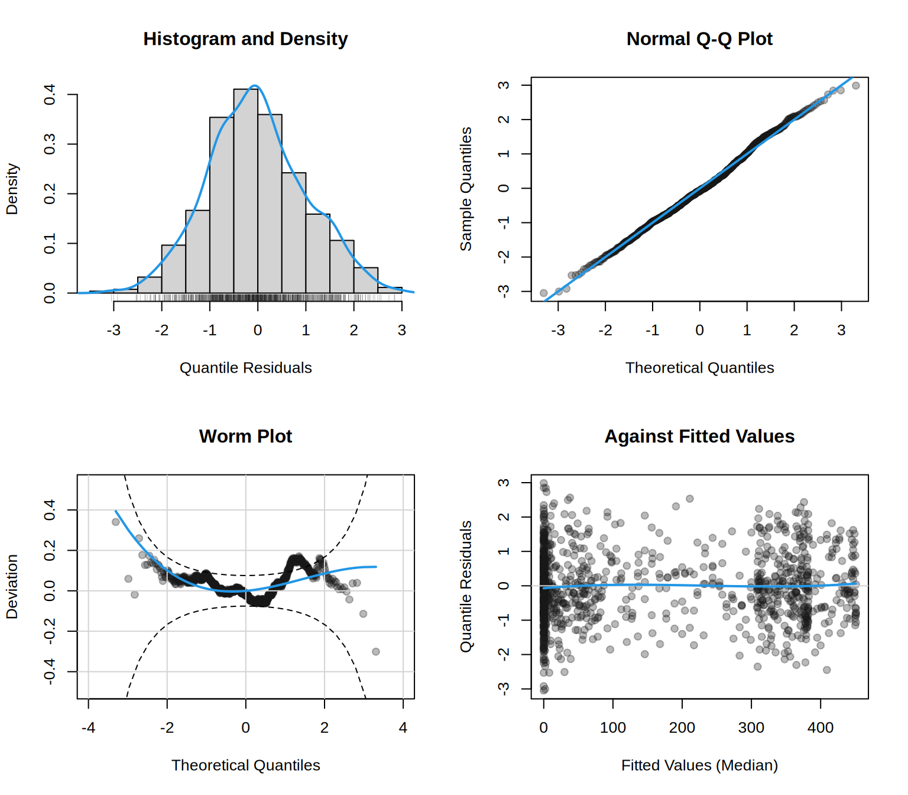
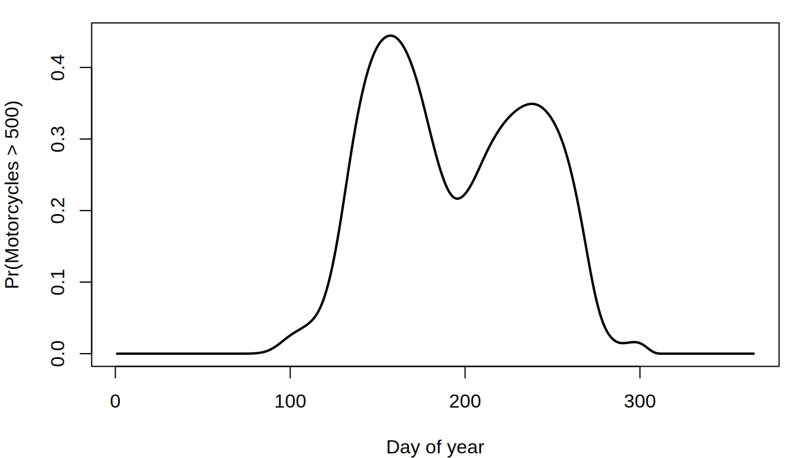
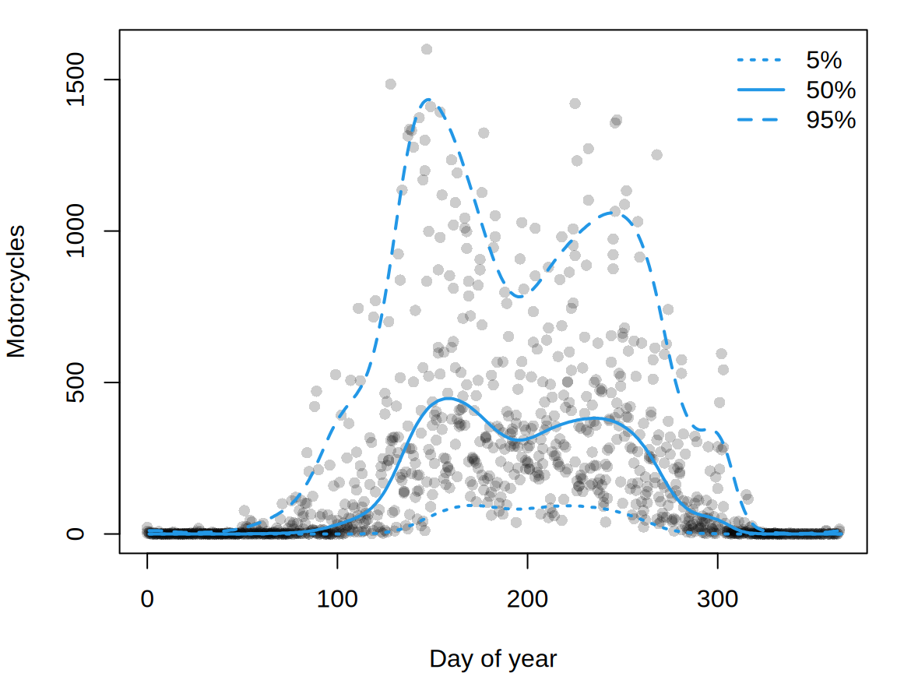

library("gamlss2")
data("HarzTraffic", package = "gamlss2")First Steps
Generalized additive models for location, scale, and shape (GAMLSS) model all parameters of a response distribution rather than only its mean (Rigby and Stasinopoulos 2005). The gamlss2 package provides a workflow similar to lm() and glm(), while allowing a separate additive predictor for every distribution parameter.
This vignette illustrates the basic workflow:
- specify and fit a distributional regression model,
- inspect its estimated effects and residuals, and
- obtain distribution parameters, probabilities, and quantiles.
1 Data
We use the HarzTraffic data included in the package. They contain daily traffic counts and weather measurements near Sonnenberg in the Harz region of Germany. Motorcycle traffic has a pronounced annual cycle, so we model the number of motorcycles (bikes) as a smooth function of the day of the year (yday).
par(mar = c(4, 4, 1, 1))
plot(bikes ~ I(yday + 1), data = HarzTraffic,
pch = 16, col = adjustcolor(1, 0.25),
xlab = "Day of year", ylab = "Motorcycles")
The response is a count and its variance is much larger than its mean. We therefore use the negative binomial NBI family. It has two parameters: mu, the conditional mean, and sigma, a dispersion parameter. Both use a log link.
2 A first model
The first model lets the mean motorcycle count vary smoothly over the year. The cyclic cubic spline (bs = "cc") joins smoothly at the beginning and end of the annual cycle.
m1 <- gamlss2(
bikes ~ s(yday, bs = "cc", k = 20),
data = HarzTraffic,
family = NBI,
trace = FALSE
)Only one right-hand side is supplied, so it is used for the first family parameter, mu. The remaining parameter, sigma, receives an intercept-only predictor. More generally, the right-hand sides separated by | correspond to the family parameters in their displayed order:
| Formula | Interpretation for NBI |
|---|---|
bikes ~ x |
model mu with x; keep sigma constant |
bikes ~ x | z |
model mu with x and sigma with z |
bikes ~ x | . |
use the predictor x for both parameters |
Thus, a model in which both the mean and dispersion vary seasonally can be specified compactly as follows.
m2 <- gamlss2(
bikes ~ s(yday, bs = "cc", k = 20) | .,
data = HarzTraffic,
family = NBI,
trace = FALSE
)For families with more parameters, further right-hand sides can be appended. For example, y ~ x | . | . | . repeats the predictor for all four parameters of a four-parameter family. Omitting right-hand sides instead gives the remaining parameters intercept-only predictors.
3 Inspecting the fitted model
The model summary reports the family and links, linear coefficients, effective degrees of freedom of the smooth terms, and model-fit information.
summary(m2)Call:
gamlss2(formula = bikes ~ s(yday, bs = "cc", k = 20) | ., data = HarzTraffic,
family = NBI, trace = FALSE)
---
Family: NBI
Link functions: log, log
*--------
Coefficients:
Estimate Std. Error t value Pr(>|t|)
mu.(Intercept) 3.87922 0.03045 127.385 <2e-16 ***
sigma.(Intercept) 0.38247 0.04460 8.576 <2e-16 ***
---
Signif. codes: 0 '***' 0.001 '**' 0.01 '*' 0.05 '.' 0.1 ' ' 1
---
Smooth terms:
edf
mu.s(yday) 16.116
sigma.s(yday) 5.092
*--------
n = 1057 df = 23.21 res.df = 1033.79
Deviance = 10101.1641 Null Dev. Red. = 13.05%
AIC = 10147.5794 elapsed = 0.08secCalling plot() without further arguments displays the estimated effects for all modeled distribution parameters.
par(mar = c(4, 4, 1, 1))
plot(m2)
Normalized quantile residuals should be approximately standard normal when the conditional distribution is well calibrated. Because randomized quantile residuals are used for discrete distributions, we set a seed to make the plots reproducible.
set.seed(1328)
plot(m2, which = "resid")
These are in-sample diagnostics. They can reveal important model deficiencies, but do not by themselves establish out-of-sample calibration.
4 Distributional predictions
We now evaluate the fitted seasonal cycle on each day of the year.
nd <- data.frame(yday = 0:364)By default, predict() returns the fitted distribution parameters on their natural scales. Setting drop = FALSE keeps the result as a data frame (which is the default).
parameters <- predict(m2, newdata = nd, drop = FALSE)
head(parameters) mu sigma
1 2.035082 4.871688
2 2.085890 4.892004
3 2.106884 4.911077
4 2.099899 4.928900
5 2.067920 4.945468
6 2.014722 4.960777For probabilities and other distributional summaries, prodist() returns one distributions3 distribution object for each row of newdata.
pf <- prodist(m2, newdata = nd)For example, the fitted probability of more than 500 motorcycles on a day is \(1 - F(500)\).
prob_high <- 1 - cdf(pf, 500)
par(mar = c(4, 4, 1, 1))
plot(nd$yday + 1, prob_high, type = "l", lwd = 2,
xlab = "Day of year",
ylab = "Pr(Motorcycles > 500)")
Conditional quantiles can be computed directly from the fitted model. Here we calculate the 5%, 50%, and 95% quantiles and add them to the observed counts.
pq <- quantile(m2, newdata = nd, probs = c(0.05, 0.5, 0.95))par(mar = c(4, 4, 1, 1))
plot(bikes ~ yday, data = HarzTraffic,
pch = 16, col = adjustcolor(1, 0.2),
xlab = "Day of year", ylab = "Motorcycles")
matlines(nd$yday + 1, pq,
lwd = 2, lty = c(3, 1, 2), col = 4)
legend("topright", c("5%", "50%", "95%"),
lwd = 2, lty = c(3, 1, 2), col = 4, bty = "n")
These fitted distributions describe response variation conditional on the estimated model.
5 Relation to gamlss
gamlss2 is a fresh implementation of the GAMLSS framework, but it can also use the family objects from gamlss.dist. Unlike the classic gamlss workflow, gamlss2() supports mgcv smooth terms directly and uses the | notation to place the predictors for all distribution parameters in a single formula.
6 Next steps
The Family Objects vignette explains available and custom response distributions. The Special Model Terms vignette covers terms beyond standard mgcv smooths.
References
Rigby, R. A., and D. M. Stasinopoulos. 2005. “Generalized Additive Models for Location, Scale and Shape.” Journal of the Royal Statistical Society C 54 (3): 507–54. https://doi.org/10.1111/j.1467-9876.2005.00510.x.